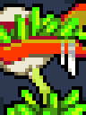
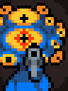

Mutations are upgrades that you can give the player. When you kill enemies they drop "rads" and when you collect enough rads you can select one of four possible upgrades between the levels.
Bolt Marrow
Bolt Marrow gives crossbow type weapons some homing properties. When fired you can sometimes see the trail make a hard turn towards an enemy.
topShotgun Shoulders
Shotgun Shoulders makes it so the projectiles from shotgun type weapons bounce when the hit walls, rather than just stop.
topLaser Brain
Laser Brain signifigantly increases the damage done by laser type weapons.
topBack Muscle
Back Muscle allows the player to carry much more ammo than normal.
topBloodlust
When the player uses the Bloodlust mutation, every time an enemy is killed there is a slight chance that your health will be refilled by one health point.
topPlutonium Hunger
With Plutonium Hunger the player is able to "suck up" rads and other drops from a much larger distance.
topBoiling Veins
With Boiling Veins the player is immune to explosive damage when their health points drop to under four.
topEagle Eyes
Eagle Eyes will allow the player greater accuracy when firing weapons. If the weapon has a large spread this will be decreased.
topEuphoria
When the player chooses Euphoria the speed of enemy projectiles is slowed quite a lot.
topExtra Feet
With Extra Feet the player suffers no side effects of any floor types, such as the cobwebs and ice. The player also moves faster.
topGamma Guts
With Gamma Guts the player will damage enemies on contact. You will take no contact damage if the enemy has less than six health points.
topHammerhead
With Hammerhead the player is able to break down a small section of wall in each level. This can help out a lot as the player can use this space a place to hide in when things get hairy.
topHeavy Heart
The rate in weapon drops from enemies is increased greatly. Heavy Heart is a very rare mutation
topImpact Wrists
 Impact Wrists causes dead enemies to fly far around the level when the enemy is killed. It also will damage enemies that are hit by the flying body.
Impact Wrists causes dead enemies to fly far around the level when the enemy is killed. It also will damage enemies that are hit by the flying body.
Sharp Teeth
When a player using Sharp Teeth is hit, all enemies that appear on the screen will take damage.
topLast Wish
 A player that chooses Last Wish has all their health brought up to full. When you choose Last Wish you are also given a chance to enter a secret level in the game.
A player that chooses Last Wish has all their health brought up to full. When you choose Last Wish you are also given a chance to enter a secret level in the game.
Lucky Shot
With Lucky Shot the player will sometimes earn ammo when they kill enemies.
topOpen Mind
Open Mind adds one treasure chest to each level. It can be a weapon chest or a ammo chest.
topPatience
Patience allows you to wait and re-roll your mutation choices on the next level.
topRabbit Paw
With Rabbit Paw enemies will drop ammunition more often than if you did not have Rabbit Paw.
topRecycle Gland
With Recycle Gland if you hit an enemy with a bullet there is a high change that you will get a bullet returned.
topRhino Skin
Rhino Skin adds four health points to the player that chooses it.
topScarier Face
Scarier Face lowers the health of all the enemies.
topSecond Stomach
Second Stomach gives a player four health points when they pick up a health pack rather than the standard two.
topStress
Players that choose Stress will see the rate of fire allowed to them is increased when their health decreses.
topStrong Spirit
Strong Spirit gives the player a second change if they are hit with a normally life ending attack. Their health will be brought down to one. A halo over the players head represents if they still have Strong Spirit available.
topThrone Butt
Throne Butt gives each character a unique ability.
topTrigger Fingers
Trigger Fingers allows a player a small increase in firing rate for each enemy killed.
topLong Arms
Long Arms extends your reach with melee weapons by more than double. It's a must have for any player planning on using melee in the late game.
top